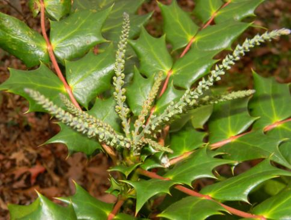
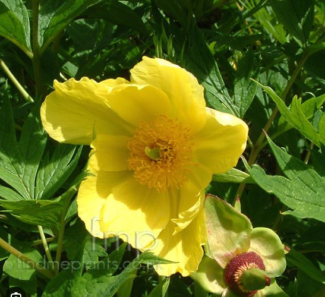

Lower Drive and Shed
Back to Home
Berberis Bealei (or is it Mahonia??)
Nature:Berberis are versatile ornamental shrubs, adding colourful foliage, flowers and berries to borders, rock gardens and containers.
Size:
Habitat:
Prune:Can be pruned to keep them in shape and respond well to hard pruning

Paeonia Lutea (Tree Peony)
Nature:Herbaceous flower, Deciduous, Flowering
Size:1.5-2.5m
Habitat:Grow in a well-drained, humus-rich soil in sun or partial shade.
Prune:No routine pruning necessary. Remove diseased, damaged, congested or crossing shoots. Shoots that are growing in unwanted directions can also be pruned out.